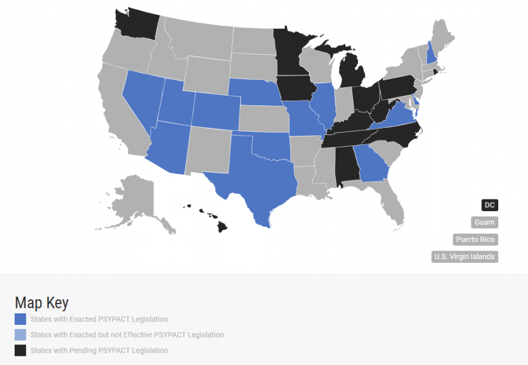

If you reside in a PSYPACT state, then I can provide you with telehealth therapy services:
What is The Psychology Interjurisdictional Compact (PSYPACT)?
PSYPACT is an interstate agreement that allows PSYPACT licensed psychologists to practice telepsychology and/or practice temporarily into other PSYPACT participating states.
What are the PSYPACT States?
- Alabama
- Arizona
- Arkansas
- Colorado
- Connecticut
- Delaware
- District of Columbia (DC)
- Florida
- Georgia
- Idaho
- Illinois
- Indiana
- Kansas
- Kentucky
- Maine
- Maryland
- Michigan
- Minnesota
- Mississippi
- Missouri
- Nebraska
- New Hampshire
- New Jersey
- North Carolina
- North Dakota
- Ohio
- Oklahoma
- Pennsylvania
- Rhode Island
- South Carolina
- South Dakota
- Tennessee
- Texas
- Utah
- Vermont
- Virginia
- Washington
- West Virginia
- Wisconsin
- Wyoming